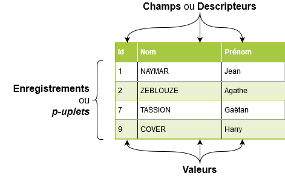
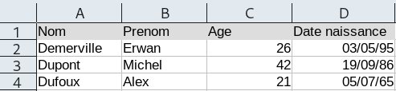
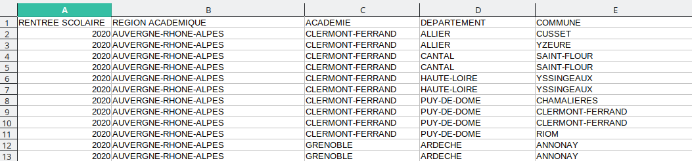

Cours - Traitement des données en tables¶
L'informatique est souvent utilisée pour le traitement de quantités importantes de données dans de nombreux domaines tels que :
- La gestion de données de sites web. (Exemple : Données utilisateurs sur un réseau social.)
- La Data Science (science des données) : Extraire des connaissances à partir de données massives.
- La finance, les assurances, l'épidémiologie, etc.
En Terminale est étudiée la notion de base de données.
Pour préparer les élèves, on étudie en Première le traitement de données organisées sous forme de tables (= listes de p-uplets nommés).
Présentation des tables de données¶
Les données représentées en tables se présentent ainsi (image issue de info.blaisepascal.fr):

Le format CSV¶
Un fichier texte CSV:
- Permet de représenter des données structurées.
- Est couramment utilisé pour importer ou exporter des données d'une feuille de calcul.
- Chaque ligne correspond à une ligne du tableau.
- Chaque colonne est séparée par un séparateur, ou délimiteur (souvent une virgule ou un point-virgule)
La feuille de calcul suivante :

... donne un fichier CSV contenant :
Nom,Prenom,Age,Date naissance
Demerville,Erwan,26,03/05/95
Dupont,Michel,42,19/09/86
Dufoux,Alex,21,05/07/65
Chaque ligne correspond à un enregistrement (= structure de données éventuellement différentes).
La première ligne définit les descripteurs (également appelés attributs, clés, champs).
Les banques de données¶
Il existe des banques de données libres contenant des bases de données que vous pouvez librement télécharger dans plusieurs formats (CSV, JSON, Excel) et utiliser.
Par exemple :
- https://data.education.gouv.fr : plateforme mise en place par le gouvernement et contenant de nombreuses données du ministère de l'éducation nationale,
- https://www.data.gouv.fr/fr/ : d'autres données libres proposées par le gouvernement (données géographiques, agriculture, énergies...)
- https://donnees.banquemondiale.org/ : données de la banque mondiale,
- etc. Il en existe plein d'autres, pas uniquement francophones.
Tables de données en Python¶
Implémentation en Python¶
En Python, il y a plusieurs façons de représenter une table de données :
- en utilisant un tableau de n-uplets représenté en Python par une liste de tuples,
- en utilisant un tableau de tableaux, représenté en Python par une liste de listes,
- en utilisant un tableau de n-uplets nommés, représenté en Python par une liste de dictionnaires.
La feuille de calcul précédente :
... pourra donc être implémentée de la manière suivante :
table = \
[('Demerville', 'Erwan', '26', '03/05/95'),
('Dupont', 'Michel', '42', '19/09/86'),
('Dufoux', 'Alex', '21', '05/07/65')]
ou de la manière suivante :
table = \
[['Nom', 'Prenom', 'Age', 'Date naissance'],
['Demerville', 'Erwan', '26', '03/05/95'],
['Dupont', 'Michel', '42', '19/09/86'],
['Dufoux', 'Alex', '21', '05/07/65']]
ou encore :
Dans notre cas, on privilégiera plutôt cette dernière implémentation, sous la forme d'une liste de dictionnaires, qui présente l'avantage d'être plus aisément manipulable.
Importer un fichier TXT / CSV :¶
On peut récupérer les données d'un fichier avec les fonctions de base de Python.
Pour cela, on va utiliser la fonction open pour ouvrir un fichier et les fonctions readlines et readline afin d'en récupérer le contenu.
À faire 1
Voici un fichier lire_ecrire.py contenant une fonction lire_fichier permettant de lire une table de données (en .csv ou .txt) et qui renvoie une liste de dictionnaires, et un fichier ecrire_fichier qui crée un fichier à partir d'une table de données.
lire_ecrire.py
Ouvrez ce fichier dans Thonny.
En reprenant le CSV précédent :
Nom,Prenom,Age,Date naissance
Demerville,Erwan,26,03/05/95
Dupont,Michel,42,19/09/86
Dufoux,Alex,21,05/07/65
Si on fait appel à notre fonction lire_fichier en spécifiant le nom du fichier et éventuellement un délimiteur, on obtient donc :
table = lire_fichier("exemple.csv")
table
[{'Nom': 'Demerville',
'Prenom': 'Erwan',
'Age': '28',
'Date naissance': '03/05/95'},
{'Nom': 'Dupont',
'Prenom': 'Michel',
'Age': '44',
'Date naissance': '19/09/86'},
{'Nom': 'Dufoux',
'Prenom': 'Alex',
'Age': '23',
'Date naissance': '05/07/65'}]
Le paramètre delimiteur de la fonction lire_fichier est par défaut défini à une virgule. Il n'y a donc pas besoin d'indiquer de délimiteur lors de l'appel à lire_fichier si l'on souhaite utiliser la virgule.
Il faut toutefois l'indiquer pour tout autre délimiteur, par exemple si le délimiteur est un point-virgule, l'appel sera du type lire_fichier("nom_fichier.csv", ";").
Note : Les données sont toutes enregistrées en chaînes de caractères.
On peut utiliser des fonctions comme int(), float() ou encore eval() pour convertir les données.
À faire 2
Téléchargez le fichier exemple.csv contenant les enregistrements de l'exemple précédent :
exemple.csv
Tout en bas du fichier lire_ecrire.py, écrire un programme pour :
- Lire le fichier CSV avec la fonction
lire_fichierdu fichier lire_ecrire.py et stocker le résultat dans une variable. - Votre variable contient donc une liste de dictionnaires. Rajoutez un nouvel enregistrement contenant votre nom, prénom, âge et date de naissance.
- Ré-écrivez à présent un nouveau fichier CSV nommé
nouveau.csvà l'aide de la fonctionecrire_fichier. - Ouvrez votre nouveau CSV sur LibreOffice Calc ou Excel, et observez le résultat.
Interroger les bases de données¶
Pour cette partie, on travaillera avec la base de données des "Effectifs dans les enseignements de spécialités en Terminale générale par spécialités et selon les principales doublettes", proposée par data.education.gouv.fr.
fr-en-effectifs-specialites-doublettes-terminale-generale.csv
Ce fichier CSV utilise le point-virgule comme délimiteur.
Il ne faudra pas se tromper de délimiteur lorsque l'on lira le fichier.
Ouvrons d'abord ce fichier avec LibreOffice Calc pour visuellement son contenu. Il ne faut pas oublier de cocher le point-virgule commme séparateur.

Le module csv
Pour cette partie, plutôt que d'utiliser les fonctions définies dans lire_ecrire.py, nous utiliserons le module csv qui permet de faciliter la lecture et l'écriture de fichiers CSV.
Ce module est natif, vous n'avez donc pas besoin de l'installer.
À faire avant les exercices qui suivent
Si vous ne l'avez pas fait, téléchargez le fichier fr-en-effectifs-specialites-doublettes-terminale-generale.csv.
Téléchargez également le script Python suivant, et mettez le dans le même dossier que le fichier csv précédent :
manipulation_tables.py
Ce script contient :
- une fonction
lire_csv(fichier, delim)qui permet de lire un fichier CSV, et renvoie la table contenue sous la forme d'une liste de dictionnaires. Ses deux paramètres sont par défaut initialisés ainsi :fichier, le chemin du fichier à lire, prend la valeur de la variable globaleFICHIER_ENTREE,delim, qui correspond au délimiteur à utiliser, est initialisé à;. Ainsi, on a pas besoin, lors de l'appel àlire_csv, de fournir un chemin de fichier et un délimiteur si l'on souhaite utiliser les valeurs par défaut.
- une fonction
creer_csv(table, fichier, delim, ordre)qui permet de créer un fichier CSV à partir d'une table sous la forme d'une liste de dictionnaires. Ses trois paramètres sont :table, une liste de dictionnaires représentant la table que l'on souhaite enregistrer,fichier, le chemin du fichier à créer ou à remplacer, initialisé àFICHIER_SORTIE,delim, qui correspond au délimiteur à utiliser, initialisé à;,ordre, initialisé àNone, permettant si on le souhaite de définir l'ordre des attributs de la table.
Exercice 1 - Créer un fichier CSV
Compléter la fonction creer_table_classe qui consiste à créer une table dans un fichier CSV contenant le nom, prénom, l'âge et la classe de chaque élève d'une classe fictive de première NSI.
Vous utiliserez la table de donnéees suivante (liste de dictionnaires) :
classe = [{"nom": "Lizotte", "prenom": "Emma", "age": "15", "classe": "1G2"},
{"nom": "Aubert", "prenom": "Luc", "age": "16", "classe": "1G1"},
{"nom": "Rousset", "prenom": "Théo", "age": "15", "classe": "1G1"},
{"nom": "Dubois", "prenom": "Maxime", "age": "16", "classe": "1G3"},
{"nom": "Levasseur", "prenom": "Maria", "age": "15", "classe": "1G2"},
{"nom": "Chabrier", "prenom": "Pierre", "age": "15", "classe": "1G1"},
{"nom": "Levy", "prenom": "Sylvain", "age": "16", "classe": "1G3"},
{"nom": "Robin", "prenom": "Thomas", "age": "16", "classe": "1G4"},
{"nom": "Cornemuse", "prenom": "Carla", "age": "16", "classe": "1G2"},
{"nom": "Gomme", "prenom": "Mathieu", "age": "16", "classe": "1G4"},
{"nom": "Bornil", "prenom": "Raphaël", "age": "15", "classe": "1G2"},
{"nom": "Marnier", "prenom": "Alexandre", "age": "16", "classe": "1G1"},
{"nom": "Soubois", "prenom": "Lucie", "age": "15", "classe": "1G4"}]
Vous devrez donc, dans la fonction, appeler creer_csv en lui donnant en entrée cette liste de dictionnaires. Le fichier CSV de sortie sera par défaut celui contenu dans FICHIER_SORTIE (initialement 'mon_fichier.csv'), que vous pouvez changer si vous le souhaitez.
Exercice 2 - Lister les colonnes
Complétez la fonction lister_colonnes qui prend une table (liste de dictionnaires) en entrée et renvoie une liste des attributs de la table.
Dans le bloc if __name__ == '__main__', créez une variable table dans laquelle vous stockerez une table de données récupérée à partir d'un fichier CSV de votre choix. Ajoutez les instructions permettant d'afficher sur une ligne différente chaque attribut de la table, en appelant votre fonction lister_colonnes.
Pour les exercices suivants, on travaillera avec notre fichier fr-en-effectifs-specialites-doublettes-terminale-generale.csv.
Vous pouvez donc déjà, dans un premier temps, vous assurer que FICHIER_ENTREE = 'fr-en-effectifs-specialites-doublettes-terminale-generale.csv' et ajouter l'instruction suivante au début du bloc if __name__ == '__main__' en bas du script :
Cela permettra de lire le fichier fr-en-effectifs-specialites-doublettes-terminale-generale.csv et de récupérer la table sous la forme d'une liste de dictionnaires dans la variable table.
Exercice 3
Complétez les fonctions chercher_academie, effectif_total_terminale, effectif_total_eleves_nsi, compter_lycees_generaux, moyenne_garcons_nsi et lycees_academie.
Lisez bien les docstrings pour comprendre ce que doit faire chaque fonction.
Trier une table de données¶
Une autre opération courante sur les tables de données consiste à trier une table en fonction d'une clé donnée.
Si l'on essaie de trier une liste de dictionnaires avec la fonction native de Python sorted, voici ce qu'il se passe :
>>> table = lire_csv()
>>> sorted(table)
Traceback (most recent call last):
File "/home/erwan/Documents/Gits/erwandemervillefr/git_nsi/docs/premiere/traitement_donnees/src/manipulation_tables.py", line 111, in <module>
sorted(table)
TypeError: '<' not supported between instances of 'dict' and 'dict'
En effet, on ne peut pas comparer directement deux dictionnaires.
Pour utiliser la fonction sorted sur notre tableau de dictionnaires, il faut indiquer comment se ramener à des valeurs que Python sait comparer (nombres, chaînes de caractères, n-uplets). Pour cela, on commence par définir une fonction qui prend en argument un enresgistrement de la table (donc un dictionnaire) et renvoie la valeur que l’on souhaite comparer.
Par exemple, si l'on travaille avec notre table des effectifs d'élèves en enseignements de spécialité, et qu'on souhaite trier les enregistrements par rapport à la colonne "PATRONYME", on créera d'abord une fonction :
def patronyme(e):
''' Prend une entrée sur un lycée de la table et renvoie le patronyme du lycée.
:param e: (dict) un dictionnaire contenant les infos sur un lycée
:return: (str) le patronyme du lycée '''
return e["PATRONYME"]
Ensuite, pour trier notre table par rapport au patronyme, et stocker le résultat dans une variable nouvelle_table, il ne restera plus qu'à faire :
Le paramètre key prend la fonction patronyme que l'on a créé ci-dessus.
On peut également ajouter un paramètre reverse si l'on souhaite trier dans l'ordre inverse :
À noter qu'il est également possible, plutôt que de créer une nouvelle table triée, de modifier directement la table de données initiale. Pour cela, on aurait utiliser la méthode sort, comme ceci :
On peut également trier une liste de dictionnaires par rapport à deux clés.
Pour cela, la fonction que l'on donnera comme key de la fonction sorted renverra un tuple de deux éléments. Par exemple, si l'on souhaite trier les enregistrements de notre table d'effectifs d'élèves en terminale générale selon le "DEPARTEMENT" ET la "COMMUNE", on écrira une fonction :
def departement_puis_commune(e):
''' Prend une entrée sur un lycée de la table et renvoie un tuple contenant le département et la commune.
:param e: (dict) un dictionnaire contenant les infos sur un lycée
:return: (tuple of str) un tuple contenant le département et la commune '''
return e["DEPARTEMENT"], e["COMMUNE"]
Ainsi, pour récupérer les enregistrements triés dans une variable nouvelle_table :
Pour être plus précis, le tri va ici se faire d'abord par rapport au département, puis, si plusieurs lycées sont dans le même département, le tri se fera alors par rapport à la commune.
Exercice 4
Complétez les fonctions trier_selon_patronyme, trier_selon_effectif et trier_selon_academie_et_effectif de manipulation_tables.py.
Vous pourrez utiliser la fonction native sorted de Python.
À noter qu'il est possible de définir une fonction à l'intérieur d'une fonction. Si vous avez besoin par exemple de créer une fonction permettant de comparer l'élément souhaité d'un dictionnaire, vous pourrez procéder ainsi.
Fusion de tables¶
Exercice 5
Complétez la fonction fusionner_deux_tables de manipulation_tables.py.
La fonction précédente fonctionne si l'on fusionne deux tables avec exactement les mêmes colonnes (les mêmes attributs, dans le même ordre).
Si deux tables ont des colonnes en commun et d'autres colonnes qui diffèrent, et que l'on souhaite fusionner leur contenu, il faut alors définir leur « domaine de valeur », c’est-à-dire quels sont les « champs » (ou colonnes) communs aux deux tables.
Voici un exemple avec deux tables que l'on souhaite fusionner :
table1 = [{"nom":"Duchmol","prenom":"Jean","moyenne":12},{"nom":"Martin","prenom":"Lise","moyenne":14}]
table2 = [{"nom":"Duchmol","prenom":"Jean","classe":"3A"},{"nom":"Martin","prenom":"Lise","classe":"5B"}]
On dispose de ces deux tables qui contiennent toutes les deux une colonne nom et une colonne prenom. La différence est que la première table contient une colonne moyenne tandis que la deuxième table contient une colonne classe. On aimerait créer une nouvelle table contenant le nom, le prénom, la moyenne et la classe de chaque élève, c'est-à-dire :
[{'nom': 'Duchmol', 'prenom': 'Jean', 'moyenne': 12, 'classe': '3A'}, {'nom': 'Martin', 'prenom': 'Lise', 'moyenne': 14, 'classe': '5B'}]
Exercice 6
Complétez les ... de la fonction à trous suivante :